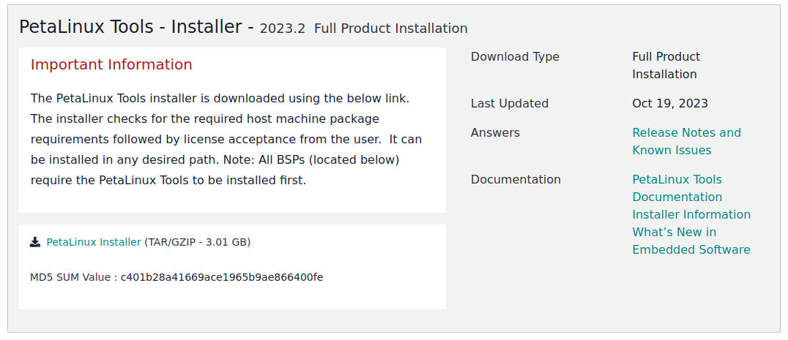
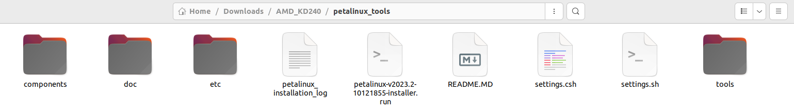
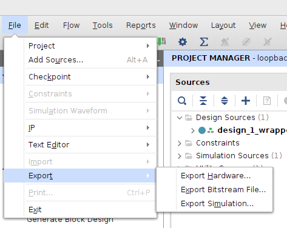
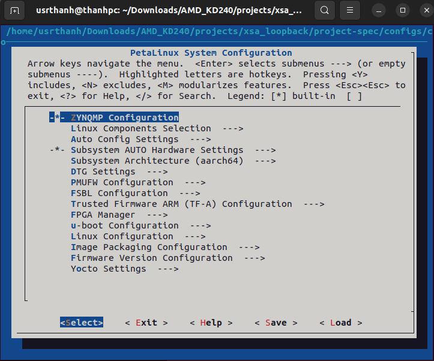
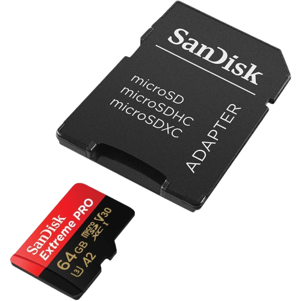
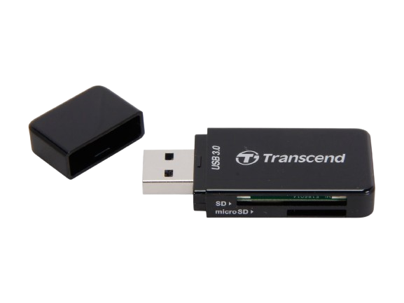
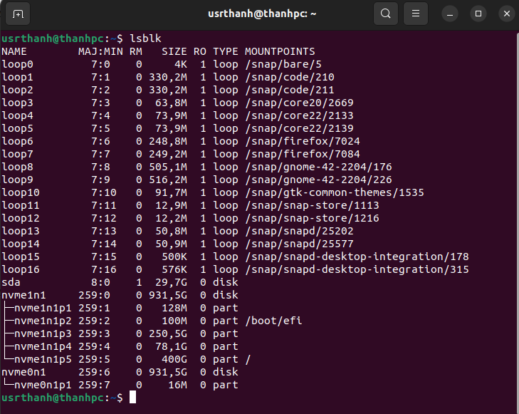
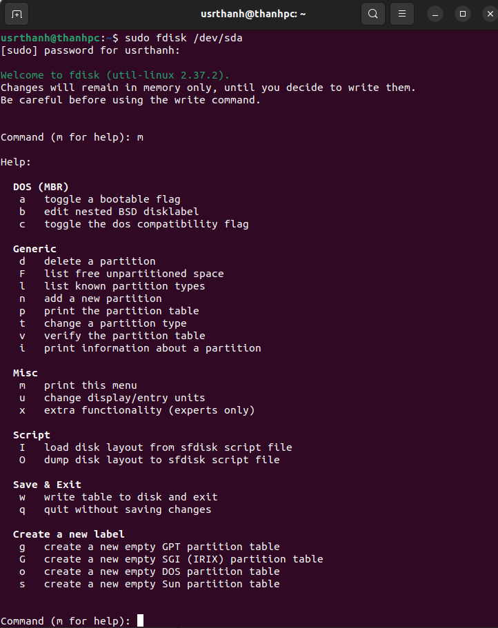
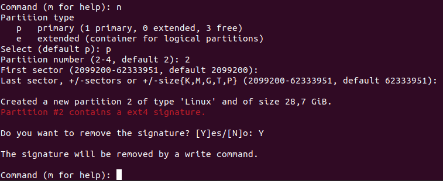

Chuong I: Build Linux su dung Petalinux tool len Kria Kd240 theo AMD Xilinx
Trong Manual nay se huong dan steps by steps cach su dung Petalinux Tools cai dat Linux len FPGA SoC Kria KD240.
Trong moi steps se co giai thich ngan gon ve lenh duoc su dung
Bước 1
1
Thay doi shell
sudo dpkg-reconfigure dash: dash mac dinh dung Ubuntu, con bash dung trong Petalinhx, Yocto, Mmake.
No se hien Install dash as /bin/sh? Yes or No: Chon No de su dung bash nham giup Petalinux chay it loi hon .
sudo dpkg-reconfigure dash
Bước 2
2
Download Petalinux Tools
Petalinux Tools
chon nam va chon tai Petalinux Tools. File tai ve se co dang petalinux-v2023.2-10121855-installer.run

Note: Lua chon ban Peatalinux Tools cung can danh gia theo ban Vivado, cung nhu he dieu hanh Ubuntu.
Bước 4
3
Tao folder & Giai nen
Tao folder AMD_KD240 va dua file petalinux-v2023.2-10121855-installer.run trong Buoc 2 vao folder AMD_KD240.
# Tao folder AMD_KD240 mkdir ~/AMD_KD240 cd ~/AMD_KD240
# Giai nen petalinux-v2023.2-10121855-installer.run vao folder petalinux_tools # petalinux_tools se la file chay moi truong cho Petalinux Tools ./petalinux-v2023.2-10121855-installer.run --extract petalinux_tools

# Chay moi truong Petalinux Tools source ./settings.sh
Note: Trong suot qua trinh ve sau cua build project su dung Petalinux Tools deu
phai duoc chay trong terminal chua moi truong Petalinux Tools da duoc kich hoat bang lenh source ./settings.sh.
Bước 4
4
Tao folder project
Dung lenh cd de quay tro lai folder AMD_KD240 neu ban dang o trong folder petalinux_tools.
Tao folder AMD_KD240 va dua file petalinux-v2023.2-10121855-installer.run trong Buoc 2 vao folder AMD_KD240.
# cd ra khoi petalinux_tools cd ..
# Tao folder projects trong folder me AMD_KD240 # Trong day se chua cac folder du an mkdir ~/projects
Lua chon ban Peatalinux Tools cung can danh gia theo ban Vivado, cung nhu he dieu hanh Ubuntu.
Bước 5
5
Trich xuat Hardware (.xsa) file
Mo Vivado, sau khi chay xong bitstream, chon File -> Export -> Export Hardware
Gia su file duoc tao co ten la design_1_wrapper.xsa

Tim file .xsa do trong folder du an Vivado va copy vao trong folder /AMD_KD240/projects/
Bước 6
6
Tao du an su dung .xsa
Su dung petalinux-create -t project nham tao du an su dung chip zynqMP
Trong do zynqMP la vi Kria KD240 su dung Zynq UltraScale+ MPSoC.
# Chuyen den folder chua project cd ~/AMD_KD240/projects
# Tao du an Petalinux voi chip zynqMP petalinux-create -t project -n kd240_xsa --template zynqMPz
# Vao trong du an kd240_xsa cd kd240_xsa
# Tao du an va chay config voi file .xsa petalinux-config --get-hw-description=/AMD_KD240/projects/design_1_wrapper.xsa
Neu chay thanh cong lenh tren se mo giao dien petalinux-config.

Chon Save xong Exit de luu cau hinh va thoat khoi giao dien.
Chi tiet con fig se duoc neu trong Sheet.
Note: Kiem tra mangde dam bao ket noi internet on dinh trong qua trinh build.
Bước 7
7
Cau hinh u-boot
Chay lenh petalinux-config -c u-boot nham cau hinh U-Boot khoi dong he thong.
Chi tiet config u-boot se duoc neu trong Sheet.
Qua trinh build se mat khoang 10-15 phut tuy vao cau hinh may tinh cua ban cung nhu wifi.
# Cau hinh u-boot petalinux-config -c u-boot
# Chon Boot options bang nut Space
# Chon Boot media bang nut Space # Chon Support for booting from SD/EMMC nham de boot he dieu hanh len Kria KD240 qua the SD card (su dung Space hoac y(yes), an n(no)) # Ket qua chay config u-boot se nhu sau: [INFO] Sourcing buildtools[INFO] Silentconfig project[INFO] Silentconfig rootfs[INFO] Generating workspace directory[INFO] Configuring: u-boot[INFO] bitbake virtual/bootloader -c menuconfigNOTE: Started PRServer with DBfile: /AMD_KD240/projects/xsa_loopback/build/cache/prserv.sqlite3, Address: 127.0.0.1:36755, PID: 22177....................................[INFO] Successfully configured u-boot
Note: Kiem tra mangde dam bao ket noi internet on dinh trong qua trinh build.
Bước 8
8
Cau hinh kernel
Chay lenh petalinux-config -c kernel nham cau hinh Kernel.
Chi tiet config kernel se duoc neu trong Sheet.
Qua trinh config kernel se mat khoang 10-15 phut tuy vao cau hinh may tinh cua ban cung nhu wifi.
# Cau hinh kernel petalinux-config -c kernel
# Ket qua chay config u-boot se nhu sau: [INFO] Sourcing buildtools[INFO] Silentconfig project[INFO] Silentconfig rootfs[INFO] Generating workspace directory[INFO] Configuring: kernel[INFO] bitbake virtual/kernel -c cleansstate....................................[INFO] Successfully configured kernel
Note: Kiem tra mangde dam bao ket noi internet on dinh trong qua trinh build.
Bước 9
9
Cau hinh rootfs
Chay lenh petalinux-rootfs nham cau hinh RootFS.
Chi tiet config rootfs se duoc neu trong Sheet.
Qua trinh build se mat khoang 10-15 phut tuy vao cau hinh may tinh cua ban cung nhu wifi.
# Cau hinh rootfs petalinux-config -c rootfs
# Ket qua build se nhu sau: [INFO] Sourcing buildtools[INFO] Silentconfig project[INFO] Generating plnxtool conf file[INFO] Successfully configured rootfs
Note: Kiem tra mangde dam bao ket noi internet on dinh trong qua trinh build.
Bước 10
10
Build toan bo du an
Chay lenh petalinux-build de build toan bo he thong Linux.
Qua trinh build se mat khoang 30-45 phut tuy vao cau hinh may tinh cua ban cung nhu wifi.
Sau khi build xong, se co /images/linux nam trong du an kd240_xsa chua cac file can thiet de nap Linux len Kria KD240.
# Ket qua build se nhu sau: [INFO] Sourcing buildtools[INFO] Building project[INFO] Silentconfig project[INFO] Silentconfig rootfs[INFO] Generating workspace directoryINFO: bitbake petalinux-image-minimalNOTE: Started PRServer with DBfile: /AMD_KD240/projects/kd240_xsa/build/cache/prserv.sqlite3.... ................................... [INFO] Successfully built project
Note: Neu ban muon build lai du an sau khi da thay doi cau hinh chi can chay lai lenh petalinux-build.
Ngoai ra nho Kiem tra mangde dam bao ket noi internet on dinh trong qua trinh build.
Chuong II: Nap du lieu vao SD Card
Day la phan ke tiep cua Chuong I sau khi da build toan bo du an. Tai day se huong dan nap du lieu vao the SD Card va chuan
bi cho viec boot he dieu hanh len Kria KD240.
Bước 1
1
Chuan bi the SD Card
Su dung the SD Card (kem ADAPTER neu co) co dung luong it nhat 16GB, tot nhat la 32GB de dam bao du lieu du de nap he dieu hanh.
Su dung dau doc de ket noi the SD Card qua chan USB voi may tinh.
Hai hinh duoi day minh hoa the SD Card, ADAPTER va dau doc the SD Card chan USB.


Bước 2
2
Kiem tra phan vung
Su dung lsblk nham xem cac phan vung cua may tinh.
# Kiem tra lsblk lsblk# Ket qua hien ra cac phan vung tren may tinh # Trong do the nho SD Card 32GB nam o sda vi no ghi 29,7Gb

Bước 3
3
Chuan bi tao phan vung /BOOT va /rootfs
Trong phan nay se chuan bi tao tren the SD Card 2 phan vung la /BOOT va /rootfs. Trong do:
/BOOT se chua cac file khoi dong he dieu hanh nhu BOOT.BIN, image.ub, boot.scr.
/rootfs se chứa hệ thống Linux (root filesystem: /bin, /etc, /lib,...).
# Thao (umount) /dev/sda nham thao tac khong bi loi sudo umount /dev/sda
# Xoa toan bo signature cua filesystem tren the SD nahm dam bao no nhu 1 the SD moi sudo wipefs -a /dev/sda
# Mo tien ich fdisk de tao phan vung (partition) moisudo fdisk /dev/sda

Note: Neu ban muon build lai du an sau khi da thay doi cau hinh chi can chay lai lenh petalinux-build.
Ngoai ra nho Kiem tra mangde dam bao ket noi internet on dinh trong qua trinh build.
Bước 4
4
Tao phan vung /BOOT
Sau khi da o trong tien ich fdisk, tien hanh tao phan vung /BOOT tren the SD Card.
# 1. Chon n (tao 1 phan vung moi) # 2. Chon p (chon tao 1 phan vung chinh - Primary Partition) # 3. 1 (Lay vi tri phan vung dau tien)# 4. Enter (Dung sector bat dau mac dinh)# 5. +1G (kích thước 1GB cho phân vùng BOOT) # 6. Y (Yes - Xac nhan)
Note: Sau khi tao xong 1 phan vung, co the an w luon de luu thay doi va thoat khoi fdisk. Hoac tao tiep phan vung /rootfs roi moi w de luu.
Bước 5
5
Tao phan vung /rootfs
Sau khi tao xong phan vung /BOOT.
Nguoi dung van dang o trong tien ich fdisk, tien hanh tao phan vung /rootfs tren the SD Card.
# 1. Chon n (tao 1 phan vung moi) # 2. Chon p (chon tao 1 phan vung chinh - Primary Partition) # 3. 2 (Lay vi tri phan vung thu 2 vi 1 cua /BOOT)# 4. Enter (Dung sector bat dau mac dinh sau cai 1)# 5. Enter (kích thước con lai cho /rootfs) # 6. Y (Yes - Xac nhan)

# 7. w (Luu thay doi) cho ca phan vung /BOOT va /rootfs
Note: Sau khi tao xong 1 phan vung, co the an w luon de luu thay doi va thoat khoi fdisk. Hoac tao tiep phan vung /rootfs roi moi w de luu.